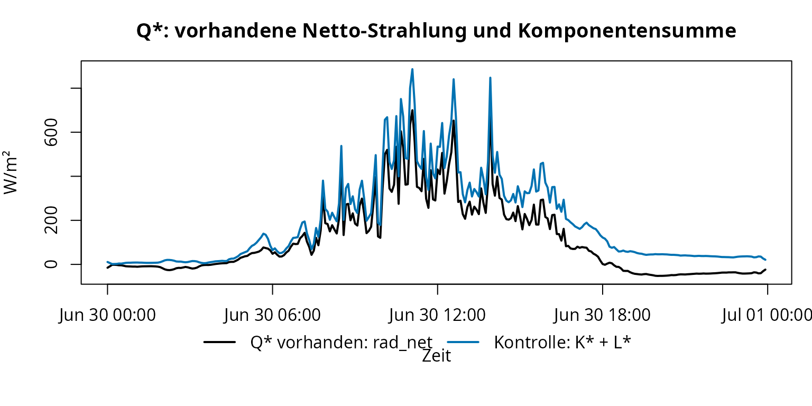
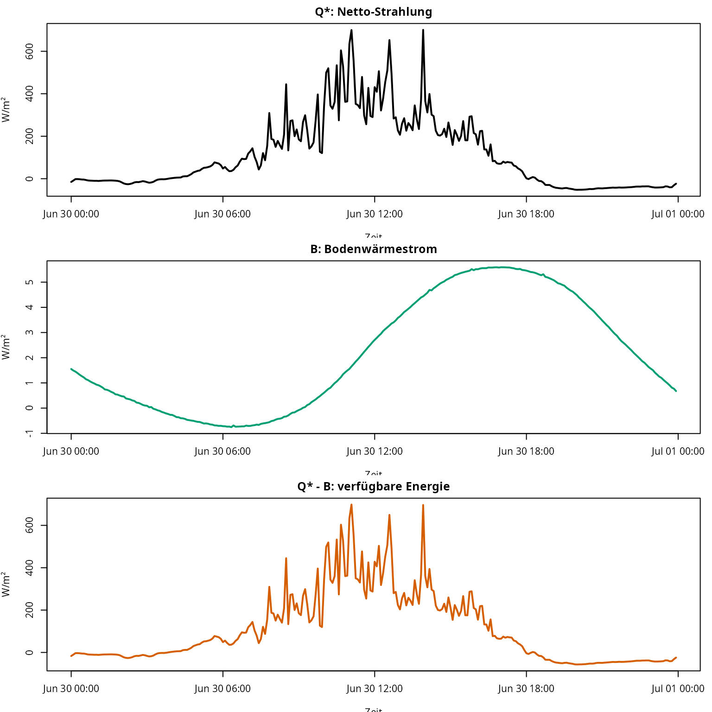

fieldClim: Manuelle Datenprüfung für Energiebilanz und Wärmeflussmethoden
Jörg Bendix, Chris Reudenbach
2026-05-28
Source:vignettes/fieldclim_missing_data.Rmd
fieldclim_missing_data.RmdZiel dieser Vignette
Diese Vignette ist der erste Teil des
fieldClim-Workflows. Sie bleibt bewusst vor der
Paketmethodik stehen und prüft den regulären Caldern-Stationsdatensatz
manuell: Zeitstruktur, Strahlungskomponenten, Netto-Strahlung,
Bodenwärmestrom und verfügbare Energie.
Ziel ist nicht, bereits Wärmeflussmethoden zu vergleichen. Ziel ist,
die Messspalten und die Energiebilanz-Terme so zu verstehen, dass der
anschließende fieldClim-Workflow auf einer geprüften
Datenbasis aufsetzt.
Diese Vignette umfasst die manuellen Schritte 0 bis 4:
| Schritt | Leitfrage | Charakter |
|---|---|---|
| 0 | Was ist das Arbeitsmodell von fieldClim? |
Orientierung |
| 1 | Wie wird der Stationsdatensatz geladen und zeitlich geprüft? | Datenprüfung |
| 2 | Wie werden kurzwellige Strahlung und Albedo gelesen und kontrolliert? | manuelle Strahlungsprüfung |
| 3 | Wie werden langwellige Bilanz und Netto-Strahlung geprüft? | manuelle Bilanzprüfung |
| 4 | Wie entsteht aus Strahlung und Bodenwärmestrom verfügbare Energie? | manuelle Energiebilanzprüfung |
Der eigentliche Paketworkflow mit
build_weather_station(),
inspect_weather_station_inputs() und den Wärmeflussmethoden
wird in der zweiten Vignette fortgesetzt.
Notation
Die Vorlesungsfolien verwenden für die bodennahe Energiebilanz die
Größen Q*, B, L und
V. Diese Vignette behält diese Notation im Erklärungsteil
bei. Erst an der Schnittstelle zum Datensatz und zu
fieldClim wird auf die spezifischen Paket- und Spaltennamen
des fieldClim Pakets gemappt.


| Theoriegröße | Bedeutung | Code-Variable in dieser Vignette | Feld im Datensatz oder Paket |
|---|---|---|---|
Q* |
Strahlungsbilanz / Netto-Strahlung | Q_star |
rad_net, rad_bal
|
B |
Bodenwärmestrom | B |
heatflux_soil, soil_flux
|
L |
fühlbarer Wärmestrom | L |
sensible_* |
V |
latenter Wärmestrom | V |
latent_* |
S |
Speicherterm | S |
hier nicht separat gemessen |
Die Arbeitsbilanz lautet in der Theorie-Notation:
\[ Q^{*} = B + L + V + S \]
Der Speicherterm S wird in diesem Beispieldatensatz
nicht separat berechnet. Das bedeutet nicht, dass Speicherung nicht
existiert. Es bedeutet nur, dass die Datengrundlage keine vollständige
Auflösung von Wärmespeicherung in Luftvolumen, Vegetation, Wasserfilmen,
oberflächennahem Boden und Messumgebung erlaubt. Für die transparente
Referenzrechnung wird deshalb gesetzt:
\[ S \approx 0 \]
Damit wird:
\[ Q^{*} - B = L + V \]
und für die Residualrechnung:
\[ V = Q^{*} - B - L \]
Mit dem Ausdruck Kontrolle aus Einzelkomponenten
wird eine arithmetische Prüfung bezeichnet: Aus kurzwelliger und
langwelliger Bilanz wird eine zweite Zeitreihe für Q*
berechnet und mit der gemessenen Spalte rad_net
verglichen.
Schritt 0: Was soll das Paket leisten?
fieldClim ist kein einzelnes Skript, sondern ein R-Paket
mit mehreren Ebenen. Für die Arbeit mit mikroklimatischen Stationsdaten
ist die zentrale Idee das weather_station-Objekt. Dieses
Objekt bündelt Zeitachse, Standort, Messgrößen und Modellparameter.
Paketfunktionen können damit dieselbe Datenstruktur weiterreichen,
ergänzen und als Tabelle ausgeben.
| Paketebene | Zweck | Beispiele |
|---|---|---|
| Objektstruktur | Messdaten und Parameter bündeln |
build_weather_station(),
as.data.frame()
|
| Strahlung | kurzwellige, langwellige und Netto-Strahlung berechnen oder prüfen |
rad_sw_bal(), rad_lw_bal(),
rad_bal()
|
| Solar- und Geländegeometrie | Sonnenstand, Gelände- und Sichtfaktoren vorbereiten |
sol_*, terr_*
|
| Transmission | atmosphärische Dämpfung der Strahlung beschreiben | trans_* |
| Boden | Wärmeleitfähigkeit, Dämpfung und Bodenwärmestrom behandeln | soil_* |
| Feuchte, Druck, Temperatur | Hilfsgrößen für weitere Berechnungen bereitstellen |
hum_*, pres_*, temp_*
|
| Wärmeflüsse | fühlbare und latente Wärmeflüsse schätzen |
sensible_*, latent_*
|
| Sammelworkflow | mehrere Wärmeflussmethoden in einem Schritt berechnen | turb_flux_calc() |
Die Workflow-Schritte behandeln nicht jede der verfügbaren Einzelfunktion isoliert. Vielmehr soll die Abfolge die vorhandenen Funktionsgruppen in einen Arbeitsablauf gebracht werden: vom Stationsdatensatz über visuelle Plausibilitätskontrolle, Strahlung und Bodenwärmestrom bis zum Vergleich mehrerer Wärmeflussmethoden.
Schritt 1: Stationsdaten laden und Zeitstruktur prüfen
Der Beispieldatensatz enthält einen vollständigen 5-Minuten-Tag der Caldern-Wiese. Ein vollständiger Tag mit 5-Minuten-Zeitschritten hat 288 Messzeitpunkte.
# Das Paket laden.
# Die Vignette setzt voraus, dass fieldClim installiert oder im Paketprojekt verfügbar ist.
library(fieldClim)
# Pfad zur Paket-Beispieldatei.
# Für eine Paketvignette ist system.file() der passende Weg, weil die Datei
# nach Installation unter inst/extdata/ ausgeliefert wird.
caldern_file <- system.file(
"extdata",
"caldern_wiese_2017-06-30.csv",
package = "fieldClim"
)
# CSV-Datei einlesen.
# Leere Felder, "NULL" und "NA" werden als fehlende Werte behandelt.
caldern <- read.csv(
caldern_file,
na.strings = c("NULL", "NA", "")
)
# Zeitstempel explizit als Datum-Zeit-Werte interpretieren.
# Die Zeitzone ist wichtig, weil Strahlungs- und Tagesganginterpretationen
# zeitabhängig sind.
caldern$datetime <- as.POSIXct(
caldern$datetime,
format = "%Y-%m-%d %H:%M:%S",
tz = "Europe/Berlin"
)
# Anzahl der Zeilen prüfen.
nrow(caldern)
#> [1] 288
# Zeitbereich prüfen.
range(caldern$datetime)
#> [1] "2017-06-30 00:00:00 CEST" "2017-06-30 23:55:00 CEST"
# Zeitschritt prüfen.
summary(diff(caldern$datetime))
#> Time differences in mins
#> Min. 1st Qu. Median Mean 3rd Qu. Max.
#> 5 5 5 5 5 5
# Spaltennamen anzeigen.
names(caldern)
#> [1] "record" "datetime" "Ta_2m" "Huma_2m"
#> [5] "Ta_10m" "Huma_10m" "Windspeed_2m" "Windspeed_10m"
#> [9] "rad_sw_in" "rad_sw_out" "RsNet" "RlNet"
#> [13] "rad_net" "LUpCo" "LDnCo" "water_vol_soil"
#> [17] "Ts" "heatflux_soil" "PCP"Interpretation. Der Datensatz ist für den folgenden Workflow gut geeignet: Er enthält 288 Messzeitpunkte und deckt damit genau einen vollständigen 5-Minuten-Tag ab. Das ist wichtig, weil die späteren Wärmeflüsse nicht aus Einzelwerten entstehen, sondern aus einem Tagesverlauf. Erst die gleichmäßige Zeitachse macht sichtbar, wann Strahlung, Bodenwärmestrom, Temperaturgradienten und Wind zusammenwirken. Für Nicht-Meteorolog:innen ist die wichtigste Botschaft: Wenn hier schon Zeitstempel, Zeitschritt oder fehlende Werte nicht stimmen, sieht eine spätere Flusskurve zwar rechnerisch aus, hat aber keine belastbare Bedeutung.
Schritt 2: Kurzwellige Strahlung und Albedo manuell prüfen
Die Folien zur Strahlung zeigen, dass einfallende kurzwellige Strahlung durch Sonnenstand, optische Weglänge und Transmission bestimmt wird. Die Albedo-Folie definiert den reflektierten Anteil als Verhältnis von ausgehender zu einfallender kurzwelliger Strahlung.


Die kurzwellige Bilanz lautet:
\[ K^{*} = K_{down} - K_{up} \]
Die Albedo lautet:
\[ \alpha = \frac{K_{up}}{K_{down}} \]
# Einfallende kurzwellige Strahlung aus der Messspalte übernehmen.
caldern$K_down <- caldern$rad_sw_in
# Reflektierte kurzwellige Strahlung aus der Messspalte übernehmen.
caldern$K_up <- caldern$rad_sw_out
# Kurzwellige Bilanz berechnen.
# Das ist der kurzwellige Anteil, der nach Reflexion an der Oberfläche bleibt.
caldern$K_star <- caldern$K_down - caldern$K_up
# Albedo berechnen.
# Bei sehr kleiner Einstrahlung ist der Quotient instabil; deshalb wird
# erst ab 50 W/m² gerechnet.
caldern$alpha <- ifelse(
caldern$K_down > 50,
caldern$K_up / caldern$K_down,
NA
)Einzelplots
# Drei Einzelplots übereinander: einfallend, reflektiert, kurzwellige Bilanz.
op <- par(mfrow = c(3, 1), mar = c(3.5, 4, 2, 1))
plot(caldern$datetime, caldern$K_down, type = "l", col = "#D55E00", lwd = 2,
xlab = "Zeit", ylab = "W/m²", main = "K_down: einfallende kurzwellige Strahlung")
plot(caldern$datetime, caldern$K_up, type = "l", col = "#7A7A7A", lwd = 2,
xlab = "Zeit", ylab = "W/m²", main = "K_up: reflektierte kurzwellige Strahlung")
plot(caldern$datetime, caldern$K_star, type = "l", col = "#000000", lwd = 2,
xlab = "Zeit", ylab = "W/m²", main = "K*: kurzwellige Bilanz")
par(op)Interpretation. Die einfallende kurzwellige
Strahlung ist der sichtbare Tagesmotor der Energiebilanz: nachts nahezu
null, tagsüber stark ansteigend, bei Bewölkung oder wechselnder
Abschattung unruhiger. Die reflektierte kurzwellige Strahlung folgt
diesem Verlauf, bleibt aber deutlich kleiner, weil die Wiesenoberfläche
nur einen Teil der Sonneneinstrahlung zurückwirft. Die kurzwellige
Bilanz K_star ist deshalb der Teil der Sonnenenergie, der
nach der Reflexion tatsächlich im System Oberfläche-Atmosphäre
verbleibt. Dieser Schritt erklärt anschaulich, warum Albedo keine
Nebengröße ist: Schon kleine Änderungen der Reflexion verändern die
verfügbare Energie für Erwärmung, Bodenwärmestrom und Verdunstung.
plot(caldern$datetime, caldern$alpha, type = "l", col = "#005AB5", lwd = 2,
xlab = "Zeit", ylab = "Albedo [-]", main = "Effektive Albedo")
abline(h = median(caldern$alpha, na.rm = TRUE), lty = 2, col = "grey50")
Interpretation. Die Albedo wird hier nicht als
Tabellenwert für „Wiese“ eingesetzt, sondern aus den gemessenen
Strahlungskomponenten berechnet. Dadurch ist sie ein Diagnosewert der
konkreten Messsituation. Sie kann sich ändern, obwohl das Material
gleich bleibt: flacher Sonnenstand, diffuse Bewölkung, feuchte
Vegetation oder Sensorrauschen verändern das Verhältnis von ausgehender
zu einfallender Strahlung. Der Filter bei niedriger Einstrahlung ist
deshalb fachlich nötig. Bei sehr kleinen K_down-Werten kann
ein kleiner Messfehler im Zähler oder Nenner den Quotienten stark
verzerren; dann würde die Albedo mehr Rechenartefakt als
Oberflächeneigenschaft zeigen.
Zusammengesetzter Plot
cols_sw <- c("#D55E00", "#7A7A7A", "#000000")
op <- par(mar = c(6, 4, 3, 1), xpd = NA)
plot(caldern$datetime, caldern$K_down, type = "l", col = cols_sw[1], lwd = 2,
ylim = range(caldern$K_down, caldern$K_up, caldern$K_star, na.rm = TRUE),
xlab = "Zeit", ylab = "W/m²", main = "Kurzwellige Strahlung")
lines(caldern$datetime, caldern$K_up, col = cols_sw[2], lwd = 2)
lines(caldern$datetime, caldern$K_star, col = cols_sw[3], lwd = 2)
legend("bottom", inset = c(0, -0.35), horiz = TRUE, bty = "n",
legend = c("K_down", "K_up", "K*"), col = cols_sw, lty = 1, lwd = 2)
par(op)Interpretation. Der zusammengesetzte Plot zeigt die Bilanzlogik in einer einzigen Grafik: Aus der einfallenden kurzwelligen Strahlung wird die reflektierte kurzwellige Strahlung abgezogen. Die schwarze Linie ist deshalb keine neue Messgröße, sondern die rechnerische Nettowirkung der kurzwelligen Strahlung. Für die spätere Energiebilanz ist genau diese Restgröße relevant: Nicht die gesamte Sonneneinstrahlung steht zur Verfügung, sondern nur der Anteil, der nach Reflexion an der Oberfläche verbleibt.
Schritt 3: Langwellige Bilanz und Netto-Strahlung Q* manuell prüfen
Die Folien zur langwelligen Aus- und Gegenstrahlung beziehen sich auf Stefan-Boltzmann-Logik, Emissionsvermögen und atmosphärische Gegenstrahlung. Für die Stationsdaten wird daraus die langwellige Bilanz.


\[ L^{*} = L_{down} - L_{up} \]
\[ Q^{*} = K^{*} + L^{*} \]
# Langwellige Gegenstrahlung aus der Atmosphäre.
caldern$L_down <- caldern$LDnCo
# Langwellige Ausstrahlung der Oberfläche.
caldern$L_up <- caldern$LUpCo
# Langwellige Bilanz.
caldern$L_star <- caldern$L_down - caldern$L_up
# Netto-Strahlung aus Einzelkomponenten.
# Das ist eine Kontrollrechnung, keine neue Messung.
caldern$Q_star_components <- caldern$K_star + caldern$L_star
# Gemessene Netto-Strahlung aus der Datei.
caldern$Q_star_measured <- caldern$rad_netEinzelplots
op <- par(mfrow = c(3, 1), mar = c(3.5, 4, 2, 1))
plot(caldern$datetime, caldern$L_down, type = "l", col = "#0072B2", lwd = 2,
xlab = "Zeit", ylab = "W/m²", main = "L_down: langwellige Gegenstrahlung")
plot(caldern$datetime, caldern$L_up, type = "l", col = "#CC79A7", lwd = 2,
xlab = "Zeit", ylab = "W/m²", main = "L_up: langwellige Ausstrahlung")
plot(caldern$datetime, caldern$L_star, type = "l", col = "#000000", lwd = 2,
xlab = "Zeit", ylab = "W/m²", main = "L*: langwellige Bilanz")
par(op)Interpretation. Die langwellige Strahlung verhält
sich anders als die kurzwellige Sonnenstrahlung. Sie verschwindet nachts
nicht, weil Atmosphäre und Oberfläche auch ohne Sonne Wärme abstrahlen.
L_down beschreibt die atmosphärische Gegenstrahlung,
L_up die Ausstrahlung der Oberfläche. Die Differenz
L_star zeigt, ob die Oberfläche langwellig Energie gewinnt
oder verliert. Für Nicht-Meteorolog:innen ist der zentrale Punkt:
Kurzwellige Strahlung erklärt vor allem den Tagesantrieb durch die
Sonne; langwellige Strahlung erklärt, warum die Oberfläche auch nachts
energetisch aktiv bleibt.
Kontrolle von Q* aus Einzelkomponenten
Die Netto-Strahlung Q* ist der zentrale Eingang in die
Energiebilanz. In der Theorie steht Q* als Strahlungsbilanz
auf der linken Seite der bodennahen Energiebilanz:
\[ 0 = Q^{*} - B - L - V \]
In dieser Vignette entspricht:
| Theorie | Datensatz / Paket | Bedeutung |
|---|---|---|
Q* |
rad_net bzw. rad_bal
|
Netto-Strahlung |
B |
heatflux_soil bzw. soil_flux
|
Bodenwärmestrom |
L |
H, sensible_*
|
fühlbarer Wärmestrom |
V |
LE, latent_*
|
latenter Wärmestrom |
Theoretisch kann Q* aus kurzwelligen und langwelligen
Einzelkomponenten gebildet werden:
\[ K^{*} = K_\downarrow - K_\uparrow \]
\[ L^{*} = L_\downarrow - L_\uparrow \]
\[ Q^{*} = K^{*} + L^{*} \]
Im Datensatz liegt aber zusätzlich bereits eine Spalte
rad_net vor. Deshalb wird hier nicht einfach eine neue
Netto-Strahlung “rekonstruiert”, sondern geprüft, ob die vorhandene
Spalte rad_net und die Summe aus Einzelkomponenten dieselbe
Bilanzebene beschreiben.
# Kurzwellige Komponenten:
# K_down ist die einfallende kurzwellige Strahlung.
# K_up ist die reflektierte kurzwellige Strahlung.
caldern$K_down <- caldern$rad_sw_in
caldern$K_up <- caldern$rad_sw_out
# Kurzwellige Bilanz.
caldern$K_star <- caldern$K_down - caldern$K_up
# Langwellige Komponenten:
# L_down ist die atmosphärische Gegenstrahlung.
# L_up ist die langwellige Ausstrahlung der Oberfläche.
caldern$L_down <- caldern$LDnCo
caldern$L_up <- caldern$LUpCo
# Langwellige Bilanz.
caldern$L_star <- caldern$L_down - caldern$L_up
# Vorhandene Netto-Strahlung aus dem Datensatz.
caldern$Q_star_measured <- caldern$rad_net
# Kontrollgröße aus Einzelkomponenten.
# Diese Größe wird hier nur diagnostisch verwendet.
caldern$Q_star_components <- caldern$K_star + caldern$L_star
# Differenz zwischen Komponentensumme und vorhandener Netto-Strahlung.
# Positive Werte bedeuten:
# K* + L* ist größer als rad_net.
caldern$Q_star_difference <- caldern$Q_star_components - caldern$Q_star_measured
summary(caldern$Q_star_difference)
#> Min. 1st Qu. Median Mean 3rd Qu. Max.
#> 3.595 32.331 78.013 74.078 100.515 187.700
cols_q <- c("#000000", "#0072B2")
op <- par(mar = c(6, 4, 3, 1), xpd = NA)
plot(
caldern$datetime,
caldern$Q_star_measured,
type = "l",
col = cols_q[1],
lwd = 2,
ylim = range(caldern$Q_star_measured, caldern$Q_star_components, na.rm = TRUE),
xlab = "Zeit",
ylab = "W/m²",
main = "Q*: vorhandene Netto-Strahlung und Komponentensumme"
)
lines(
caldern$datetime,
caldern$Q_star_components,
col = cols_q[2],
lwd = 2
)
legend(
"bottom",
inset = c(0, -0.35),
horiz = TRUE,
bty = "n",
legend = c("Q* vorhanden: rad_net", "Kontrolle: K* + L*"),
col = cols_q,
lty = 1,
lwd = 2
)
par(op)Interpretation. Die beiden Linien sind nicht
deckungsgleich. Die Differenz zwischen Komponentensumme und vorhandener
Netto-Strahlung ist durchgehend positiv und reicht in diesem Tag von
etwa 3.6 bis 187.7 W/m²; im Mittel liegt sie bei 74.1 W/m². Das ist kein
kleiner Rundungsfehler, sondern eine eigene Datendiagnose. Für die
weitere Rechnung heißt das: rad_net und
K_down - K_up + L_down - L_up dürfen in diesem Datensatz
nicht unbesehen als dieselbe Netto-Strahlung behandelt werden.
Das ist zentral, weil die meisten Wärmeflussmethoden direkt an der
verfügbaren Energie hängen. Wenn Q_star um mehrere zehn
W/m² verschoben ist, verschieben sich auch Priestley-Taylor, Bowen,
Bulk-Residual und der Energieanteil von Penman. Monin-Obukhov/Profile
nutzt Q_star zwar nicht als direkten Energieterm, braucht
Q_star - B aber als Plausibilitätsmaßstab. Eine unklare
Netto-Strahlung macht deshalb nicht nur eine Kurve unsicher, sondern den
gesamten Methodenvergleich schwerer interpretierbar.
plot(
caldern$Q_star_measured,
caldern$Q_star_components,
pch = 16,
col = rgb(0, 0, 0, 0.35),
xlab = "Q* vorhanden: rad_net [W/m²]",
ylab = "Kontrolle: K* + L* [W/m²]",
main = "Q*: rad_net gegen Komponentensumme"
)
abline(0, 1, lty = 2, col = "grey40")
Interpretation. Der Scatterplot macht sichtbar, dass
es sich nicht um zufälliges Hin-und-Her-Rauschen handelt. Die Punkte
liegen systematisch oberhalb der 1:1-Linie. Die aus Einzelkomponenten
berechnete Netto-Strahlung ist also fast durchgehend größer als
rad_net. Praktisch bedeutet das: Die Komponentensumme kann
nicht einfach als Ersatz für rad_net verwendet werden, ohne
vorher zu klären, ob beide Größen dieselbe Korrektur, dieselbe
Mittelung, dieselbe Vorzeichenkonvention und dieselbe Sensorverarbeitung
repräsentieren.
plot(
caldern$datetime,
caldern$Q_star_difference,
type = "l",
col = "#D55E00",
lwd = 2,
xlab = "Zeit",
ylab = "K* + L* - rad_net [W/m²]",
main = "Differenz zwischen Komponentensumme und rad_net"
)
abline(h = 0, lty = 2, col = "grey40")
Interpretation. Die Zeitreihe zeigt, wann die
Abweichung besonders groß wird. Wenn sie im Tagesverlauf mit der
Strahlung anwächst, ist sie nicht als zufälliger Messpunktfehler zu
lesen. Dann liegt näher, dass die beiden Netto-Strahlungsgrößen auf
unterschiedlichen Verarbeitungsschritten beruhen: zum Beispiel anderer
Loggerkanal, andere Korrektur der langwelligen Komponenten,
unterschiedliche Mittelungsfenster oder nicht identische
Vorzeichenlogik. Für den Workflow reicht hier eine klare Entscheidung:
Weitergerechnet wird mit der vorhandenen Arbeitsgröße
rad_net; die Komponentensumme bleibt eine Qualitäts- und
Plausibilitätskontrolle.
plot(
caldern$K_down,
caldern$Q_star_difference,
pch = 16,
col = rgb(0, 0, 0, 0.35),
xlab = "K_down [W/m²]",
ylab = "K* + L* - rad_net [W/m²]",
main = "Abweichung in Abhängigkeit vom solaren Antrieb"
)
abline(h = 0, lty = 2, col = "grey40")
Interpretation. Die Kopplung an K_down
zeigt, dass die Abweichung mit dem solaren Tagesgang zusammenhängt. Das
spricht gegen eine reine Zufallsstreuung. Für die weitere Auswertung ist
die Konsequenz wichtiger als die exakte Ursache: Die Netto-Strahlung
muss als bewusste Arbeitsgröße gewählt werden. In dieser Vignette wird
rad_net als Q_star verwendet, während
K_star + L_star als Kontrollgröße stehen bleibt.
Diese Prüfung ist der methodische Drehpunkt der Vignette. Ohne eine klare Arbeitsgröße für
Q_starwäre der spätere Methodenvergleich uneindeutig: Unterschiede zwischen PT, Bulk-Residual, Bowen oder Penman könnten dann teilweise aus einer verschobenen Strahlungsbilanz stammen und nicht aus der eigentlichen Methode. Monin-Obukhov/Profile ist davon weniger direkt betroffen, weil dieser Pfad aus Profilen rechnet; zur Plausibilitätsprüfung gegen die verfügbare Energie braucht man aber auch dort eine verlässliche Vergleichsgröße.
Schritt 4: Bodenwärmestrom und verfügbare Energie manuell prüfen
Die Bodenwärme-Folien zeigen den Bodenwärmestrom als
Wärmeleitungsproblem. In den Caldern-Daten wird B direkt
als heatflux_soil verwendet.


Die verfügbare Energie für fühlbaren und latenten Wärmestrom ist:
\[ Q^{*} - B \]
# Theoriegröße Q*: gemessene Netto-Strahlung.
caldern$Q_star <- caldern$Q_star_measured
# Theoriegröße B: gemessener Bodenwärmestrom.
caldern$B <- caldern$heatflux_soil
# Energie, die für L und V verfügbar bleibt.
caldern$Q_minus_B <- caldern$Q_star - caldern$BEinzelplots
op <- par(mfrow = c(3, 1), mar = c(3.5, 4, 2, 1))
plot(caldern$datetime, caldern$Q_star, type = "l", col = "#000000", lwd = 2,
xlab = "Zeit", ylab = "W/m²", main = "Q*: Netto-Strahlung")
plot(caldern$datetime, caldern$B, type = "l", col = "#009E73", lwd = 2,
xlab = "Zeit", ylab = "W/m²", main = "B: Bodenwärmestrom")
plot(caldern$datetime, caldern$Q_minus_B, type = "l", col = "#D55E00", lwd = 2,
xlab = "Zeit", ylab = "W/m²", main = "Q* - B: verfügbare Energie")
par(op)Interpretation. Q_star ist der
radiative Nettoantrieb des Tages: tagsüber positiv durch die Sonne,
nachts häufig negativ oder schwach, weil langwellige Verluste
dominieren. B beschreibt den Bodenwärmestrom. In der hier
verwendeten Vorzeichenkonvention bedeutet ein positiver Bodenwärmestrom,
dass Energie in den Boden geht und damit nicht mehr für die turbulenten
Flüsse in die Luft zur Verfügung steht. Q_star - B ist
deshalb die eigentliche Arbeitsgröße für die energiegebundenen Methoden.
Sie sagt: So viel Energie bleibt nach Abzug des Bodenanteils für
fühlbaren und latenten Wärmestrom übrig.
Zusammengesetzter Plot
cols_energy <- c("#000000", "#009E73", "#D55E00")
op <- par(mar = c(6, 4, 3, 1), xpd = NA)
plot(caldern$datetime, caldern$Q_star, type = "l", col = cols_energy[1], lwd = 2,
ylim = range(caldern$Q_star, caldern$B, caldern$Q_minus_B, na.rm = TRUE),
xlab = "Zeit", ylab = "W/m²", main = "Q*, B und Q* - B")
lines(caldern$datetime, caldern$B, col = cols_energy[2], lwd = 2)
lines(caldern$datetime, caldern$Q_minus_B, col = cols_energy[3], lwd = 2)
legend("bottom", inset = c(0, -0.35), horiz = TRUE, bty = "n",
legend = c("Q*", "B", "Q* - B"), col = cols_energy, lty = 1, lwd = 2)
par(op)Übergang zur zweiten Vignette
Bis hierher wurden die Messdaten und die zentralen
Energiebilanzgrößen geprüft. Die Größen Q_star und
B sind damit als Arbeitsterme vorbereitet. Die zweite
Vignette überführt denselben Datensatz in ein
weather_station-Objekt und nutzt darauf die Paketmethoden
für Wärmeflüsse.